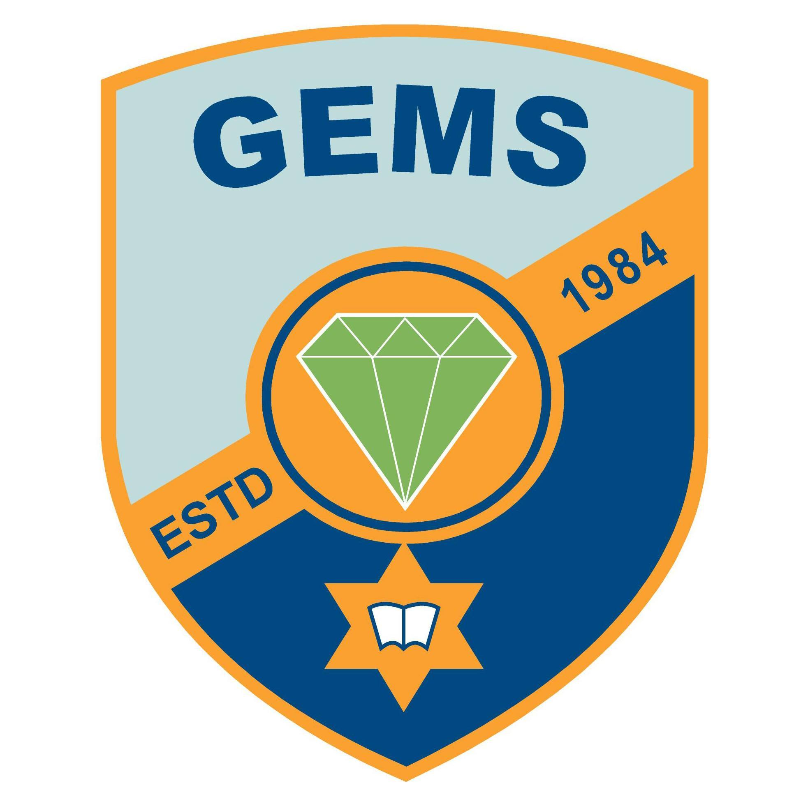
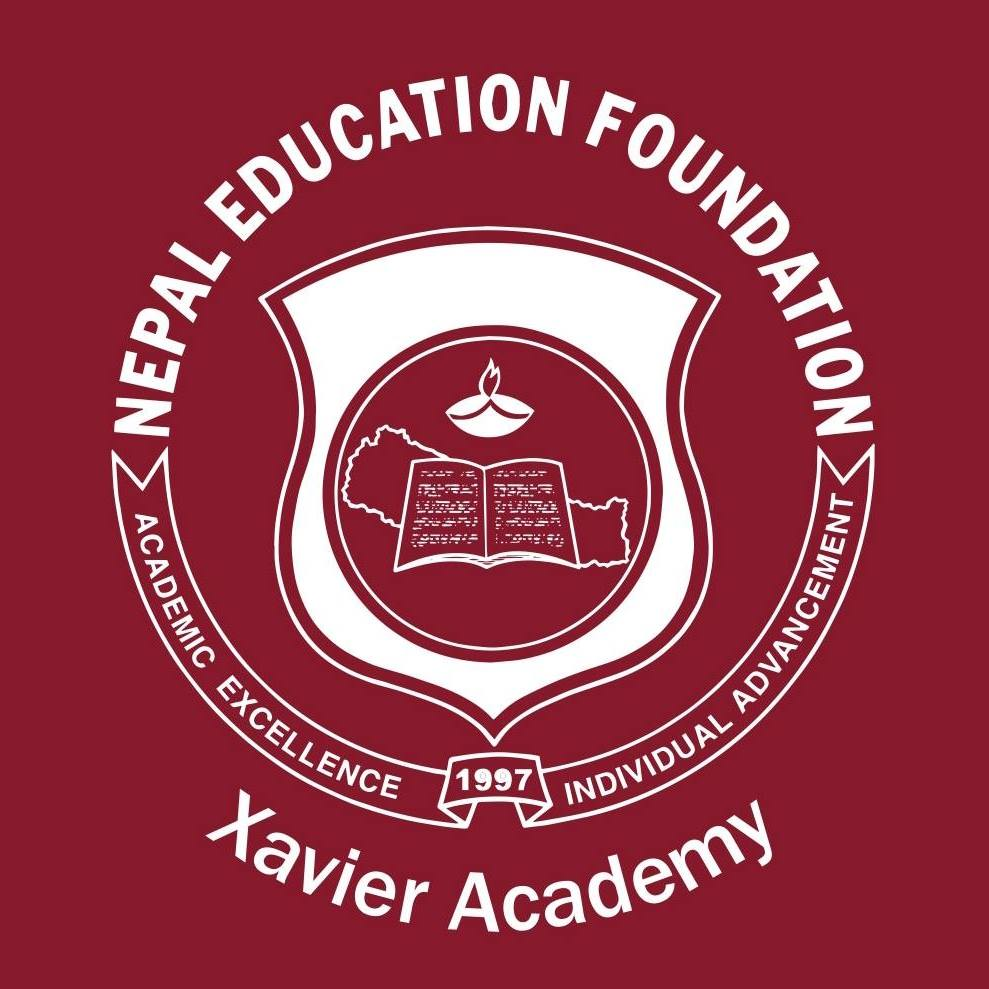
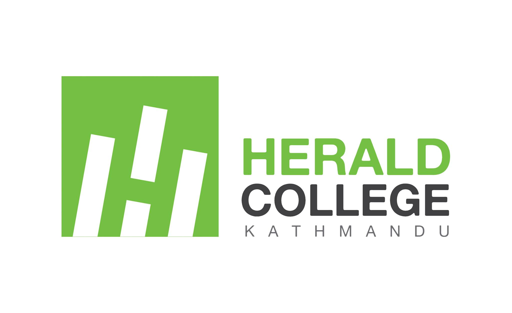

Graded English Medium School (G.E.M.S.)
I was about 10 years old when I switched schools and at that time it felt like I would never be able to adapt to the new enviroment. I remember walking into the school and being so lost as I had never been there before. Eventually I got familiar wit the school and started making many friends. Those six years of my life were a wild roller coaster ride.
Xavier Academy
When the pandemic I was pretty confused on what I was going to do. The S.E.E. examination could not be conducted due to coronavirus so I had nothing to do for a few month. The results of the S.E.E. were finally published and I was satisfied with my grade point average. I eventually decided to study at Xavier Academy as it was, in my opinion, the best college that was close to my home. And honestly it probably was the best school experinece until then.
Herald College Kathmandu
After the board exams I wanted to pursue a degree in computer science. So I started to compare courses available in Nepal. There were a couple of options but for price and degree Herald was among the best.
